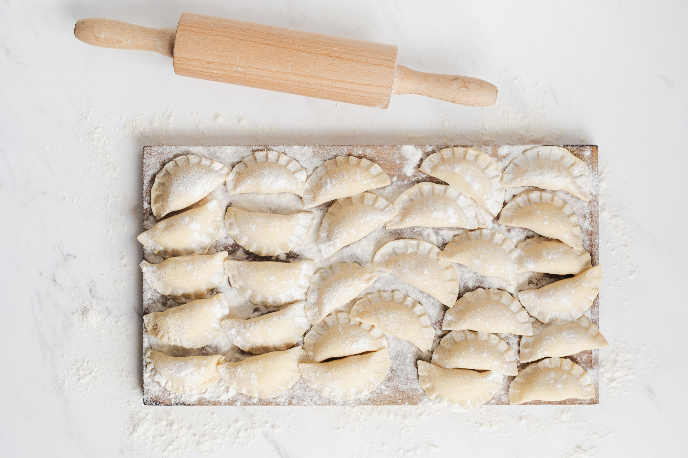

About Pierogi
Potato pierogi are among the most popular types of Polish dumpligs. A traditional Polish dish that is found in several variations, such as sweet and savory, these dumplings are a staple of Eastern European cuisine and are a type of comfort food that all households hold dear.
The dumplings can take on many fillings, but potatoes are the most traditional. They can be boiled or pan-fried—or cooked in an air-frier if you have one—and make an excellent appetizer, light lunch, or dinner. Boiled or fried is simply a matter of personal preference. Boiled pierogi are softer, more like ravioli, while pan-fried have a crispy exterior, similar to pan-fried dumplings.
Traditionally served with sour cream, onions, and bits of crispy bacon, pierogi are surprisingly easy to assemble and can be frozen for later use.
Preparation
Step 1
Prepare the dough: Add the flour and salt to a large bowl; whisk to combine. In a small saucepan, heat ½ cup water and the butter over medium-high until butter is melted, about 3 minutes. Pour the buttery liquid into the flour gradually, stirring it in as you add it. (The dough will be quite crumbly and flaky at this point, like a biscuit dough.) Stir in the egg until combined then move the dough to a lightly floured surface and knead until smooth, 5 to 7 minutes. Cover the dough with a dampened towel or plastic wrap and let rest at room temperature for 30 minutes.
Step 2
Prepare the filling: Peel the potatoes and cut into 1-inch cubes. Add them to a large pot, sprinkle with 1 tablespoon salt and cover with cold water by about 2 inches. Bring to a boil over high and continue to cook at a simmer until potatoes are tender, about 25 minutes.
Step 3
While the potatoes cook, prepare the onions: In a large skillet, melt the butter over medium-high. Add the onions, season generously with salt and pepper, and cook, stirring occasionally, until golden-brown and softened, about 12 minutes. Set aside about 1 cup of onions for garnish and add the rest to a medium bowl.
Step 4
Transfer the cooked potatoes to a colander to drain, then transfer to the medium bowl with the onions. Add the cheese, stir to combine, season generously with salt and pepper, then let cool.
Step 5
Bring a large pot of heavily salted water to a boil over high.
Step 6
Prepare the wrappers: Cut the dough into two even pieces. (You’ll want to leave one piece under the towel to stay moist while you work with the other piece.) You’ll also want a small bowl of flour, a small bowl of water and a towel handy for keeping your hands clean. Dust some flour onto a baking sheet (for holding the pierogi) and your work surface, then roll out one portion of dough until ⅛-inch thick. Using a 3-inch cookie cutter or inverted glass, punch 12 to 15 disks of dough. (Save and refrigerate the scraps to boil as a rustic pasta, in soup or another use.)
Step 7
Assemble the pierogi: Working with one disk at time, spoon a scant tablespoon of filling onto the middle of it. Fold the dough in half to enclose the filling, bringing the edges together to form a crescent shape. Pinch the two sides together at the top, then work your way down on both sides, pinching the dough over the filling and pushing in the filling as needed, making sure the potato mixture does not break the seal. If needed, you can dip your fingertip into water and moisten the dough in spots as needed to help the two sides adhere together.
Step 8
To form a rustic pattern on the curved seal, pinch the rounded rim underneath using your pointer finger and middle finger and press an indentation on top with your thumb, working your way along the rounded rim. Transfer to the prepared baking sheet. (If you’ve gotten some filling on your fingers, dip your fingertips into the bowl of water then dry them off on the towel.)
Once folded Pierogi should look like this:

Step 9
Repeat with remaining disks, then repeat the entire process with the remaining portion of dough. You’ll want to work fairly quickly, as the pierogi can be harder to seal if they start to dry out. (If cooking the pierogi at a later point, transfer them on the baking sheet to the freezer until frozen solid, then transfer the pierogi to a resealable bag and freeze.)
Step 10
To cook the pierogi, add a single layer of pierogi to the pot of boiling water. Let them cook until they rise to the surface, about 2 minutes, then cook another 2 to 3 minutes until puffy. (With frozen dumplings, you will need to increase the cooking time by a couple of minutes.) Use a slotted spoon to transfer cooked dumplings to a colander to drain, then boil remaining dumplings.
Step 11
If you want to pan-fry your pierogi, working in batches, melt 1 to 2 tablespoons of butter in a large skillet over medium-high until crackling. Add a few boiled pierogi in a single layer to avoid overcrowding, and cook until crisp and golden, 1 to 2 minutes per side. Repeat with remaining pierogi, adding butter as needed.
Step 12
Serve hot. Top with any browned butter from the pan, warmed reserved onions, sour cream and herbs.